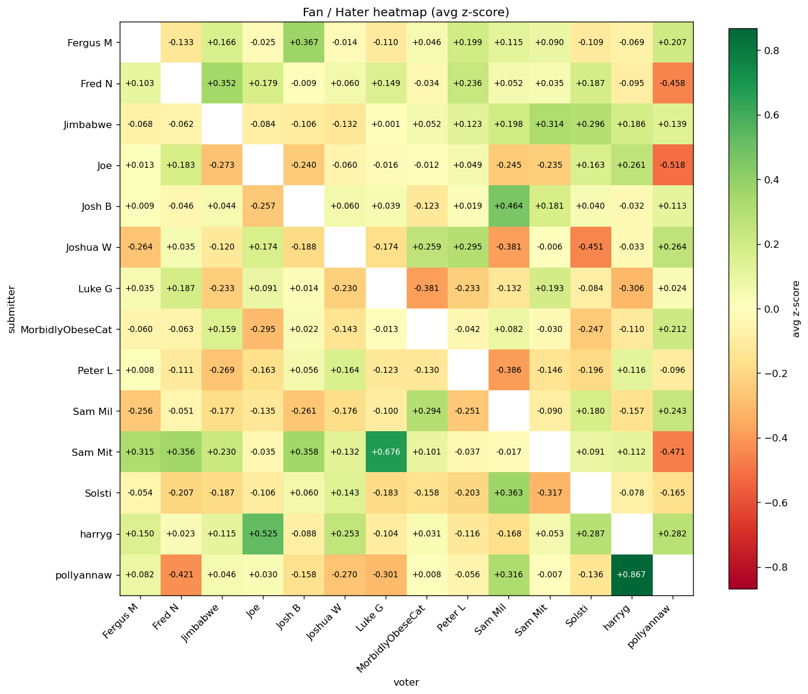

| metric | value |
|---|---|
| Leagues | 6 |
| Rounds | 55 |
| Songs submitted | 663 |
| Distinct submitters | 14 |
| Distinct voters | 14 |
Players with at least 2 songs submitted, ranked by mean within-round z-score of the points they banked (received normalised against the other songs in the same round). avg_z_received > 0 means the player typically beats the round average; forfeits pull it down since a forfeited song banks 0. total_received is the raw points the player banked.
| rank | player | avg_z_received | total_z_received | total_received | songs |
|---|---|---|---|---|---|
| 1 | Sam Mit | +0.464 | +24.603 | 314 | 53 |
| 2 | Fred N | +0.242 | +13.337 | 268 | 55 |
| 3 | harryg | +0.204 | +11.207 | 266 | 55 |
| 4 | Jimbabwe | +0.19 | +6.276 | 179 | 33 |
| 5 | Josh B | +0.088 | +4.128 | 186 | 47 |
| 6 | Fergus M | +0.082 | +4.506 | 227 | 55 |
| 7 | pollyannaw | +0.049 | +0.878 | 82 | 18 |
| 8 | Joe | -0.035 | -1.58 | 163 | 45 |
| 9 | Joshua W | -0.135 | -7.159 | 179 | 53 |
| 10 | Solsti | -0.178 | -7.66 | 159 | 43 |
| 11 | MorbidlyObeseCat | -0.181 | -9.978 | 200 | 55 |
| 12 | Luke G | -0.187 | -9.352 | 164 | 50 |
| 13 | Peter L | -0.276 | -13.51 | 176 | 49 |
| 14 | Sam Mil | -0.302 | -15.696 | 169 | 52 |
Player with the highest total points banked in each league. Uses received points (forfeits count as 0), matching the real standings.
| league | player | total | songs |
|---|---|---|---|
| Basic League | Joe | 31 | 8 |
| Jamie is a soft boy | Sam Mit | 101 | 13 |
| Montage League | Josh B | 34 | 8 |
| Personal League | Sam Mit | 88 | 12 |
| Show me what you got | Fred N | 75 | 10 |
| Song for the Season | Fred N | 19 | 4 |
Olympic-style: 3 points for finishing 1st in a round, 2 for 2nd, 1 for 3rd. Ties share the higher rank, so two songs tied for 1st both earn 3 medal points.
| rank | player | gold 🥇 | silver 🥈 | bronze 🥉 | medal_points |
|---|---|---|---|---|---|
| 1 | Sam Mit | 14 | 7 | 6 | 62 |
| 2 | Fred N | 8 | 7 | 8 | 46 |
| 3 | harryg | 8 | 7 | 6 | 44 |
| 4 | Fergus M | 6 | 9 | 4 | 40 |
| 5 | Joe | 6 | 2 | 4 | 26 |
| 6 | Joshua W | 6 | 0 | 8 | 26 |
| 7 | Josh B | 2 | 7 | 5 | 25 |
| 8 | Solsti | 3 | 5 | 4 | 23 |
| 9 | MorbidlyObeseCat | 3 | 5 | 4 | 23 |
| 10 | Luke G | 1 | 8 | 4 | 23 |
| 11 | Jimbabwe | 3 | 3 | 5 | 20 |
| 12 | Sam Mil | 2 | 4 | 6 | 20 |
| 13 | Peter L | 2 | 3 | 5 | 17 |
| 14 | pollyannaw | 3 | 0 | 1 | 10 |
For each submitter, the voter whose votes land furthest from that voter's own per-round vote distribution. Metric: mean z-score across shared rounds, where z = (vote - voter_round_mean) / voter_round_std and unrated songs in a participated round count as 0. Rounds where the voter gave every song the same vote are dropped (z is undefined). pts is the raw cumulative points for context. See the 'Fan / Hater Heatmap' for the full pair-by-pair view.
| rank | player | biggest_fan | fan_z | pts | shared_rounds |
|---|---|---|---|---|---|
| 1 | pollyannaw | harryg | +0.867 | 16 | 18 |
| 2 | Sam Mit | Luke G | +0.676 | 44 | 48 |
| 3 | harryg | Joe | +0.525 | 30 | 45 |
| 4 | Josh B | Sam Mil | +0.464 | 30 | 43 |
| 5 | Fergus M | Josh B | +0.367 | 29 | 46 |
| 6 | Solsti | Sam Mil | +0.363 | 27 | 40 |
| 7 | Fred N | Jimbabwe | +0.352 | 26 | 33 |
| 8 | Jimbabwe | Sam Mit | +0.314 | 22 | 33 |
| 9 | Joshua W | Peter L | +0.295 | 26 | 46 |
| 10 | Sam Mil | MorbidlyObeseCat | +0.294 | 30 | 51 |
| 11 | Joe | harryg | +0.261 | 24 | 45 |
| 12 | MorbidlyObeseCat | pollyannaw | +0.212 | 9 | 18 |
| 13 | Luke G | Sam Mit | +0.193 | 23 | 48 |
| 14 | Peter L | Joshua W | +0.164 | 24 | 47 |
For each submitter, the voter whose votes land furthest from that voter's own per-round vote distribution. Metric: mean z-score across shared rounds, where z = (vote - voter_round_mean) / voter_round_std and unrated songs in a participated round count as 0. Rounds where the voter gave every song the same vote are dropped (z is undefined). pts is the raw cumulative points for context. See the 'Fan / Hater Heatmap' for the full pair-by-pair view.
| rank | player | biggest_hater | hater_z | pts | shared_rounds |
|---|---|---|---|---|---|
| 1 | Joe | pollyannaw | -0.518 | 0 | 8 |
| 2 | Sam Mit | pollyannaw | -0.471 | 2 | 18 |
| 3 | Fred N | pollyannaw | -0.458 | 2 | 18 |
| 4 | Joshua W | Solsti | -0.451 | 1 | 41 |
| 5 | pollyannaw | Fred N | -0.421 | 3 | 18 |
| 6 | Peter L | Sam Mil | -0.386 | 5 | 45 |
| 7 | Luke G | MorbidlyObeseCat | -0.381 | 5 | 49 |
| 8 | Solsti | Sam Mit | -0.317 | 5 | 43 |
| 9 | MorbidlyObeseCat | Joe | -0.295 | 7 | 45 |
| 10 | Sam Mil | Josh B | -0.261 | 8 | 45 |
| 11 | Josh B | Joe | -0.257 | 6 | 41 |
| 12 | harryg | Sam Mil | -0.168 | 11 | 47 |
| 13 | Fergus M | Fred N | -0.133 | 15 | 55 |
| 14 | Jimbabwe | Joshua W | -0.132 | 8 | 31 |
Mean z-score per (submitter row, voter column) pair. Green = the voter tends to give that submitter higher-than-average votes (fan); red = lower-than-average (hater). Diagonal blank: nobody votes on their own song. Names alphabetised on both axes.

Top 10 songs ranked by how many standard deviations above the round average they scored — a 10 in a round averaging 4 outranks a 10 in a round averaging 8.
| rank | z_in_round | score | round_avg | song | artist | player | league | round |
|---|---|---|---|---|---|---|---|---|
| 1 | +2.982 | 18 | 5.0 | Difyrrwch | The Trials of Cato | Sam Mit | Personal League | Henry |
| 2 | +2.324 | 11 | 5.0 | Books from Boxes | Maximo Park | Joe | Personal League | Sam |
| 3 | +2.252 | 14 | 6.0 | Hurt | Johnny Cash | Sam Mil | Show me what you got | Covers |
| 4 | +2.248 | 13 | 5.0 | Riders on the Storm | The Doors | Sam Mit | Personal League | Mitchell |
| 5 | +2.238 | 15 | 4.0 | 19-2000 - Soulchild Remix | Gorillaz | Sam Mit | Jamie is a soft boy | Best Remix |
| 6 | +2.236 | 14 | 6.0 | Night On My Mind | Sharky | Jimbabwe | Show me what you got | Awesome Obscurity |
| 7 | +2.216 | 11 | 5.0 | Face Down | The Red Jumpsuit Apparatus | Solsti | Personal League | Jack |
| 8 | +2.207 | 7 | 3.0 | Learn to Fly | Foo Fighters | Josh B | Montage League | Family time |
| 9 | +2.187 | 14 | 6.0 | Hit the Road Jack | Ray Charles | Luke G | Show me what you got | Shorties |
| 10 | +2.121 | 6 | 3.0 | Fat Lip | Sum 41 | Josh B | Montage League | Pre-drinks |
Top 10 songs ranked by how many standard deviations below the round average they scored. The score column is still the raw points; round_avg is the mean across all songs in that round.
| rank | z_in_round | score | round_avg | song | artist | player | league | round |
|---|---|---|---|---|---|---|---|---|
| 1 | -2.822 | -12 | 4.0 | Guitar Pick | MEMI | Joshua W | Jamie is a soft boy | Dirty foreigners |
| 2 | -2.275 | -4 | 2.73 | Your Heart Is a Muscle the Size of Your Fist | Ramshackle Glory | Fred N | Basic League | Body Part |
| 3 | -2.169 | -1 | 3.0 | Sheila | Jamie T | harryg | Basic League | Jamie’s round |
| 4 | -2.121 | 0 | 3.0 | Cigaro | System Of A Down | Sam Mil | Montage League | Pre-drinks |
| 5 | -2.1 | -10 | 4.0 | Hands Open | Snow Patrol | Luke G | Jamie is a soft boy | Song from a video game soundtrack. |
| 6 | -2.092 | -9 | 4.0 | Into the West | Annie Lennox | Fergus M | Jamie is a soft boy | Worst (Best) songs to play at a funeral |
| 7 | -2.036 | -5 | 4.0 | 21 Seconds | So Solid Crew | Josh B | Jamie is a soft boy | Bow Chicka Wow Wow |
| 8 | -1.936 | 0 | 5.0 | Whiteboy - Radio Edit | James | Luke G | Personal League | Sam |
| 9 | -1.896 | -2 | 2.45 | Sugar Man | Rodríguez | Sam Mit | Basic League | Job |
| 10 | -1.849 | -5 | 4.0 | Angel Of Death | Slayer | Luke G | Jamie is a soft boy | Freebird! |
Top 10 songs that genuinely split the room. Metric: per song, the std of its explicit (non-zero) votes, z-scored against the other songs' stds in the same round. Songs need at least 4 explicit raters AND at least one positive AND at least one negative vote — a standout +N alone is a consensus winner, not polarisation. Leagues without downvotes are excluded by construction (no way to express dislike). total_up / total_down are the sums of positive / |negative| points; up_votes / down_votes are the head-counts.
| rank | z | score | total_up | total_down | up_votes | down_votes | song | artist | player | league | round |
|---|---|---|---|---|---|---|---|---|---|---|---|
| 1 | +2.406 | -4 | 5 | 9 | 3 | 6 | Saturday Night | Whigfield | Luke G | Jamie is a soft boy | You lot are fucking old |
| 2 | +2.25 | 0 | 5 | 5 | 2 | 4 | Cha-Ching (Till We Grow Older) | Imagine Dragons | Fergus M | Jamie is a soft boy | Deep Cuts |
| 3 | +2.156 | -1 | 6 | 7 | 4 | 4 | Instant Crush (feat. Julian Casablancas) | Daft Punk | Jimbabwe | Jamie is a soft boy | Freebird! |
| 4 | +2.034 | 4 | 10 | 6 | 5 | 5 | Hayloft | Mother Mother | Fred N | Jamie is a soft boy | A family affair |
| 5 | +1.906 | 3 | 5 | 2 | 2 | 2 | Faith - Remastered | George Michael | Fred N | Jamie is a soft boy | From the grave |
| 6 | +1.884 | 7 | 10 | 3 | 6 | 2 | Good Riddance (Time of Your Life) | Green Day | Peter L | Jamie is a soft boy | Worst (Best) songs to play at a funeral |
| 7 | +1.724 | 2 | 5 | 3 | 4 | 3 | PROJECT: Yi | League of Legends | MorbidlyObeseCat | Basic League | Jamie’s round |
| 8 | +1.71 | 5 | 7 | 2 | 4 | 2 | Black Lungs | Architects | harryg | Basic League | Colour |
| 9 | +1.685 | 8 | 9 | 1 | 4 | 1 | Ni**as In Paris | JAŸ-Z | Josh B | Jamie is a soft boy | He did what? |
| 10 | +1.664 | 0 | 4 | 4 | 3 | 3 | Sexy And I Know It | LMFAO | Sam Mil | Jamie is a soft boy | Bow Chicka Wow Wow |
Artists by number of songs submitted across all rounds. Shows the top 10 plus anyone tied with the 10th on play count. avg_z is the mean within-round z-score of the artist's songs (how far above/below the round average they landed); it is blank when every one of the artist's songs fell in a round where all songs scored the same.
| rank | artist | plays | avg_z |
|---|---|---|---|
| 1 | The Wombats | 12 | -0.309 |
| 2 | Green Day | 6 | +0.713 |
| 3 | System Of A Down | 6 | -0.321 |
| 4 | Gorillaz | 4 | +0.539 |
| 5 | Muse | 4 | +0.534 |
| 6 | Red Hot Chili Peppers | 4 | -0.027 |
| 7 | Queen | 3 | +0.797 |
| 8 | Dizzee Rascal | 3 | +0.722 |
| 9 | Kid Kapichi | 3 | +0.715 |
| 10 | blink-182 | 3 | +0.649 |
| 11 | Eminem | 3 | +0.493 |
| 12 | Max Richter | 3 | +0.394 |
| 13 | Good Charlotte | 3 | +0.353 |
| 14 | Fall Out Boy | 3 | +0.328 |
| 15 | The Offspring | 3 | +0.287 |
| 16 | My Chemical Romance | 3 | +0.212 |
| 17 | JAŸ-Z | 3 | +0.196 |
| 18 | half•alive | 3 | +0.104 |
| 19 | DON BROCO | 3 | +0.098 |
| 20 | The Prodigy | 3 | -0.353 |
| 21 | Limp Bizkit | 3 | -0.369 |
| 22 | The Police | 3 | -0.397 |
| 23 | Nirvana | 3 | -0.593 |
| 24 | Rage Against The Machine | 3 | -1.197 |
| 25 | Bob Marley & The Wailers | 3 | -1.335 |
Tracks (matched by Spotify track ID) submitted in more than one round, either by the same player or by different players. scores lists the points each submission earned, oldest round first; z_scores gives the matching within-round z-score (— where the round had no score variance).
| rank | plays | song | artist | players | scores | z_scores |
|---|---|---|---|---|---|---|
| 1 | 2 | Fairytale of New York (feat. Kirsty MacColl) | The Pogues | MorbidlyObeseCat, Solsti | 15, 3 | 1.652, -0.693 |
| 2 | 2 | This Girl (Kungs Vs. Cookin' On 3 Burners) | Kungs | Luke G, Peter L | 8, 6 | 0.814, 0.387 |
| 3 | 2 | Dear Maria, Count Me In | All Time Low | Joshua W, Solsti | 7, 6 | 0.309, 0.369 |
| 4 | 2 | The Bad Touch | Bloodhound Gang | Jimbabwe, Josh B | 9, 3 | 1.131, -0.562 |
| 5 | 2 | Snacky In My Packy | Gabby's Dollhouse | Fred N, harryg | 11, 1 | 1.546, -1.018 |
| 6 | 2 | back to friends | sombr | MorbidlyObeseCat, pollyannaw | 5, 5 | -0.466, 1.673 |
| 7 | 2 | Ni**as In Paris | JAŸ-Z | Josh B, Sam Mil | 8, 2 | 0.697, -0.843 |
| 8 | 2 | Supermassive Black Hole | Muse | Joshua W, pollyannaw | 8, 2 | 0.567, -0.395 |
| 9 | 2 | Misery Business | Paramore | MorbidlyObeseCat, Solsti | 3, 3 | -0.264, -0.739 |
| 10 | 2 | Invaders Must Die | The Prodigy | Sam Mit | 2, 4 | -0.707, 0.781 |
| 11 | 2 | The Times They Are A-Changin' | Bob Dylan | Joshua W, Sam Mil | 4, 1 | -0.245, -1.093 |
| 12 | 2 | Turn | The Wombats | Sam Mil | 1, 3 | -1.018, 0.0 |
| 13 | 2 | Jack Sparrow | The Lonely Island | Fergus M, Solsti | 2, 1 | -0.734, -1.124 |
| 14 | 2 | Heat Waves | Glass Animals | Sam Mil, Solsti | 1, 0 | -1.018, -1.421 |
| 15 | 2 | Get Low | Lil Jon & The East Side Boyz | Josh B, Solsti | -5, 5 | -1.35, 1.415 |
| 16 | 2 | Get Up, Stand Up | Bob Marley & The Wailers | MorbidlyObeseCat, Solsti | -2, 0 | -1.459, -1.398 |
| 17 | 2 | 21 Seconds | So Solid Crew | Josh B, Peter L | -5, 2 | -2.036, -0.794 |
Points a player's songs earned but the player never banked, because they missed the voting deadline. Music League zeroes the points you receive if you don't cast your own ballot (downvotes against you still count). points_lost = points actually received − score the song earned (negative: the bigger the loss, the more negative).
| rank | player | songs_forfeited | total_points_lost |
|---|---|---|---|
| 1 | Sam Mil | 4 | -11 |
| 2 | Peter L | 1 | -7 |
| 3 | Fergus M | 2 | -7 |
| 4 | Josh B | 1 | -7 |
| 5 | MorbidlyObeseCat | 1 | -3 |